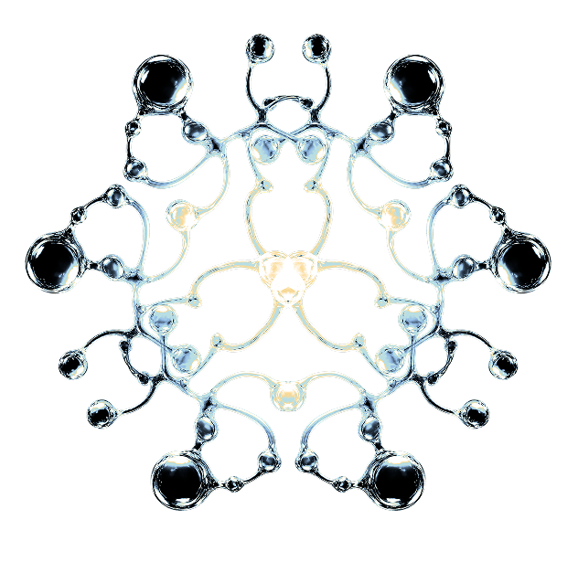

26.07.21 15:0700:05
Catch that sounds...
00:00
화면을 눌러 5초 동안 소리를 담아보세요.
26.07.15 23:4300:05
오른쪽 원을 눌러 오늘의 소리를 선택하세요.
Humming...
선택한 소리를 분석해 아트워크를 만들고 있어요.
Hum list : D150716310644

화면을 눌러 5초 동안 소리를 담아보세요.
오른쪽 원을 눌러 오늘의 소리를 선택하세요.
선택한 소리를 분석해 아트워크를 만들고 있어요.
